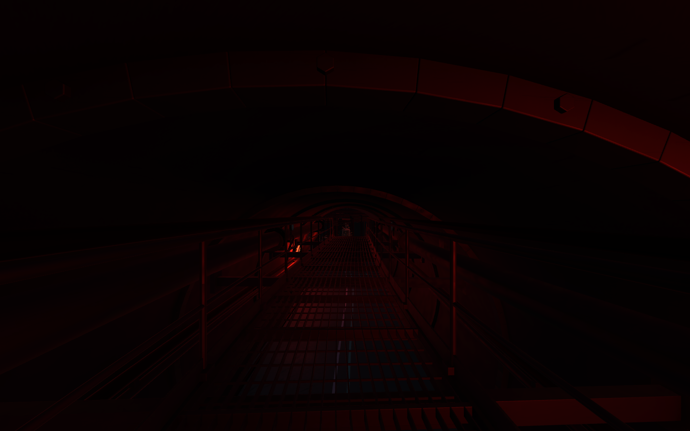
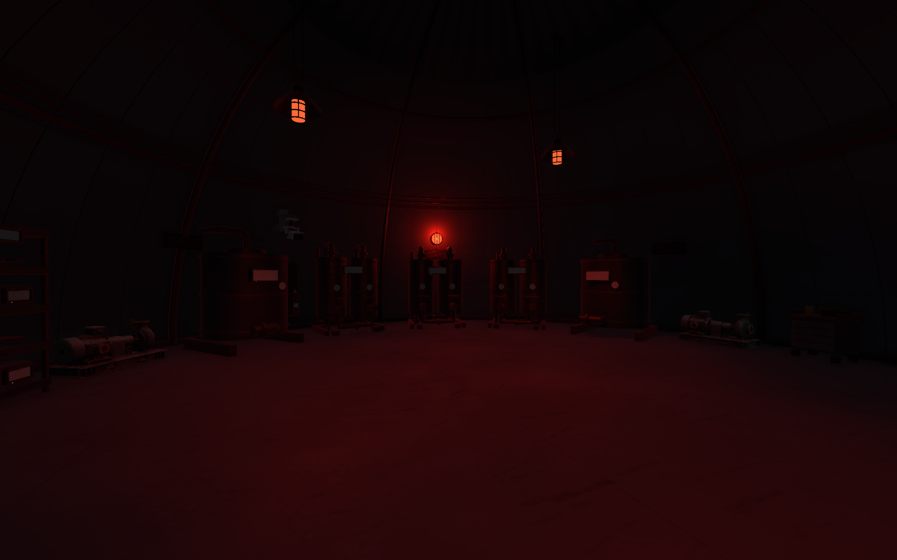

B2 복층 정비 통로와 산업 조명
2026-11-10 · 송예찬 · Level_B2_Circular
상부는 공급·회수 배관을 점검하며 앉아서 지나가는 길입니다. 아래는 서서 이동하고, 양 끝 계단으로 오르내립니다. 조명 수를 줄이고 원형 보호망등과 금속 갓 조명으로 기계층을 구분했습니다.
복층 통로19개 · 상부 데크2.42m · 폭1.50m · 활성 광원158개 · 흰 직접 광원0개
상부 배관과 크라우칭 정비 동선

T01 상부. 배관·차단 밸브·플랜지 옆의 그레이팅으로 이동합니다.원형 보호망등과 금속 갓 조명

E01 물 처리 설비. 조명을 주요 설비 주변에 모았습니다.검수 기록 · 복층 통로 도면